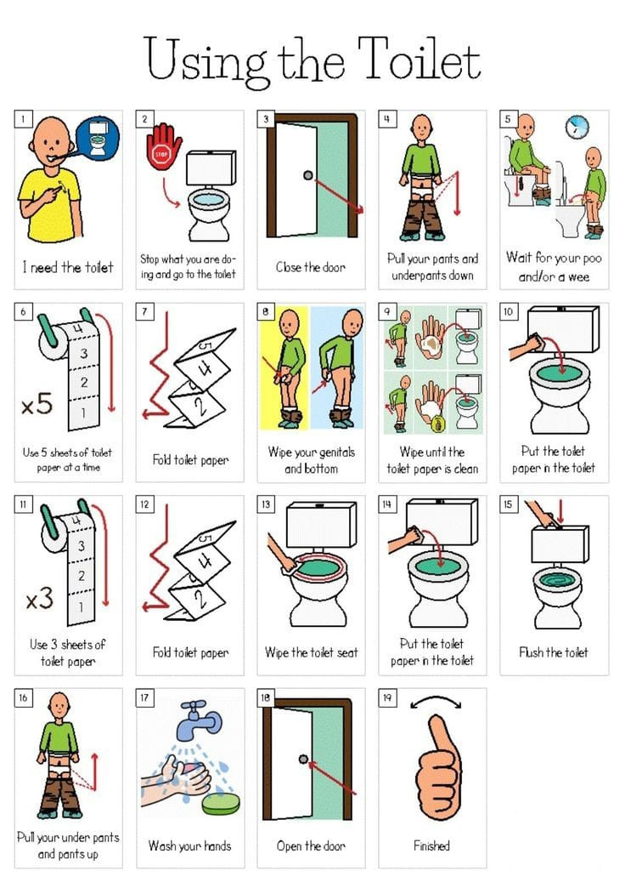

Apa itu ADL?
Activities of Daily Living (ADL) adalah aktivitas dasar yang diperlukan dalam kehidupan sehari-hari, seperti mandi, makan, berpakaian, dan menggunakan toilet. Bagi anak dengan gangguan spektrum autisme, ADL memerlukan pendekatan khusus.
Panduan Bergambar

Mandi
Bantu anak mempersiapkan dan menjalani kegiatan mandi.

Makan
Latih anak untuk makan sendiri di meja makan.

Berpakaian
Ajari anak mengenakan pakaian secara bertahap.

Toilet Training
Berikan dukungan visual dan langkah demi langkah dalam membiasakan anak menggunakan toilet.
Strategi Pendukung untuk Orang Tua
- Struktur dan konsistensi: Jadwal rutin membantu anak merasa aman.
- Visual aids: Gunakan gambar/jadwal visual untuk mendukung komunikasi.
- Metode ABA / TEACCH: Intervensi berbasis perilaku membantu pelatihan ADL.
- Self-care orang tua: Istirahat dan dukungan sosial sangat penting.